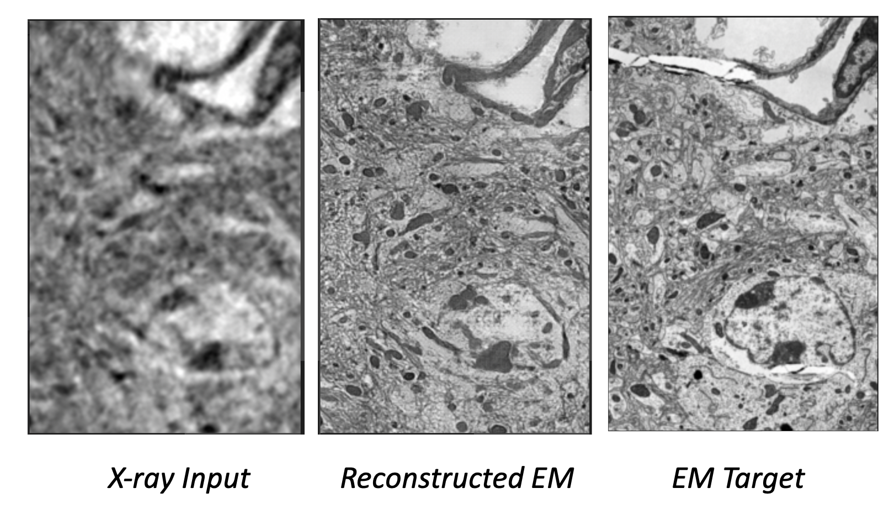
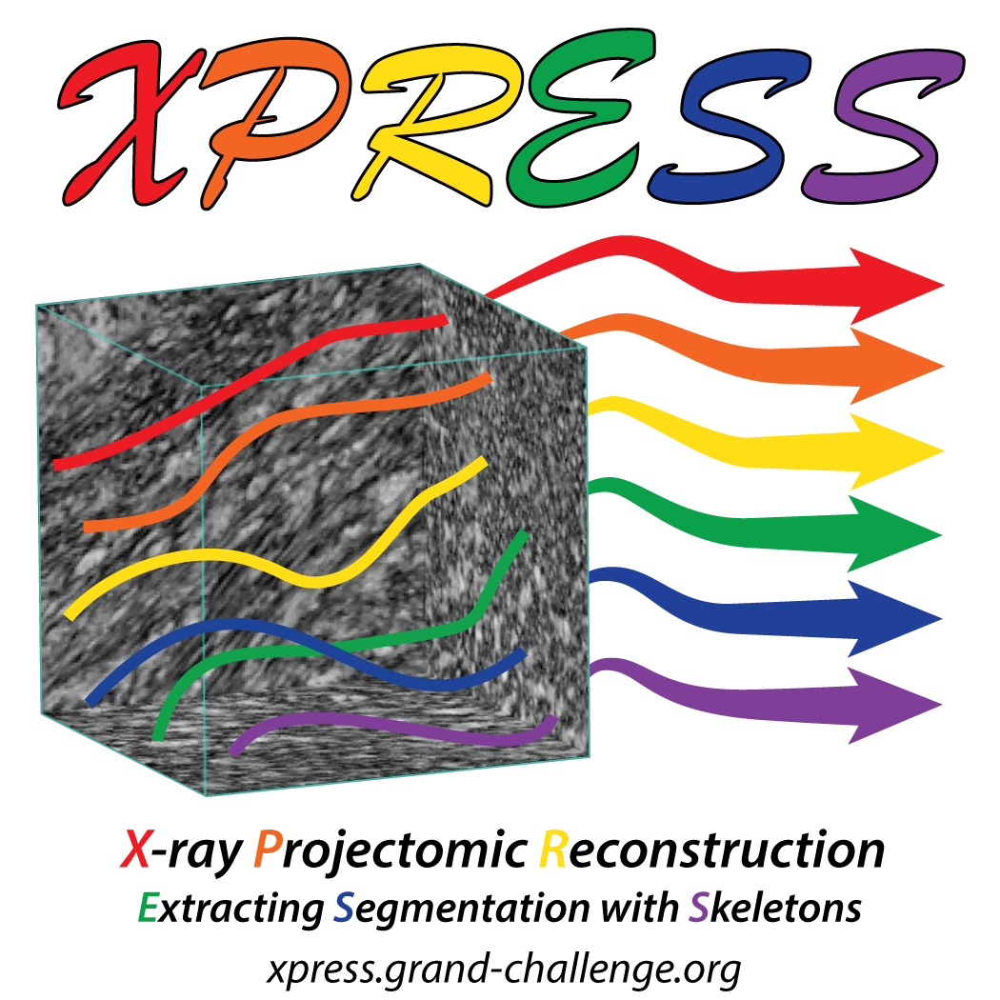
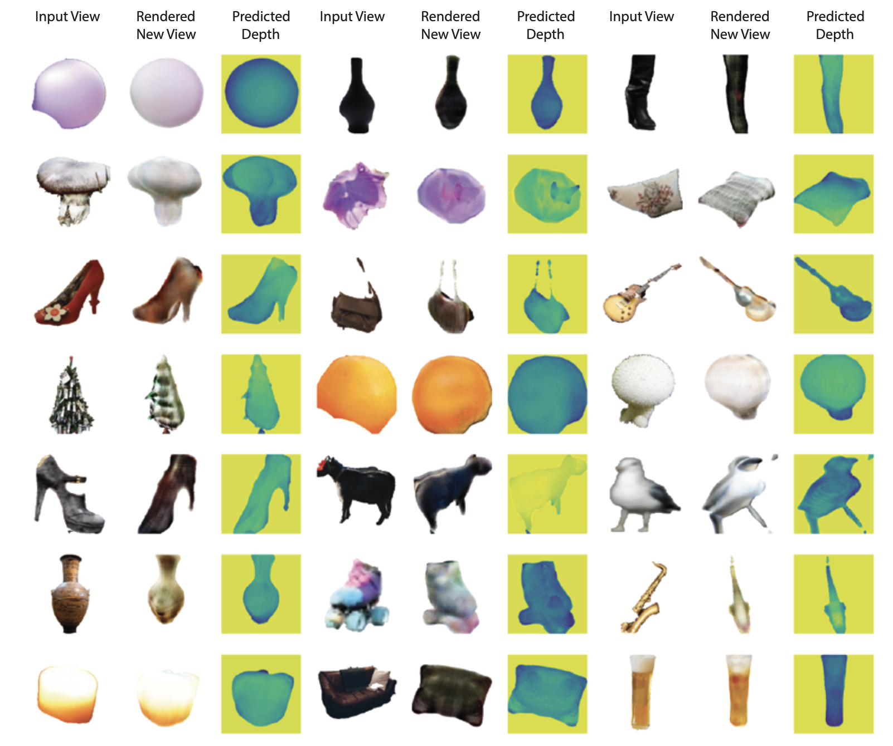
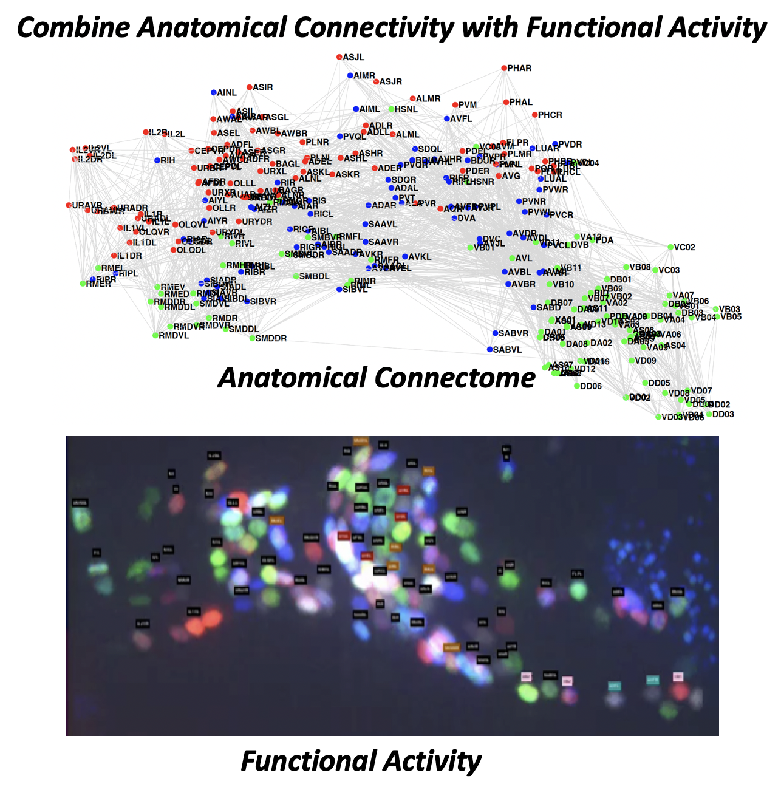
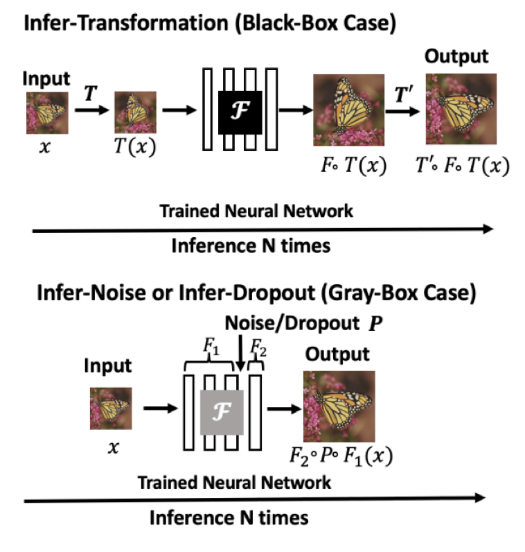
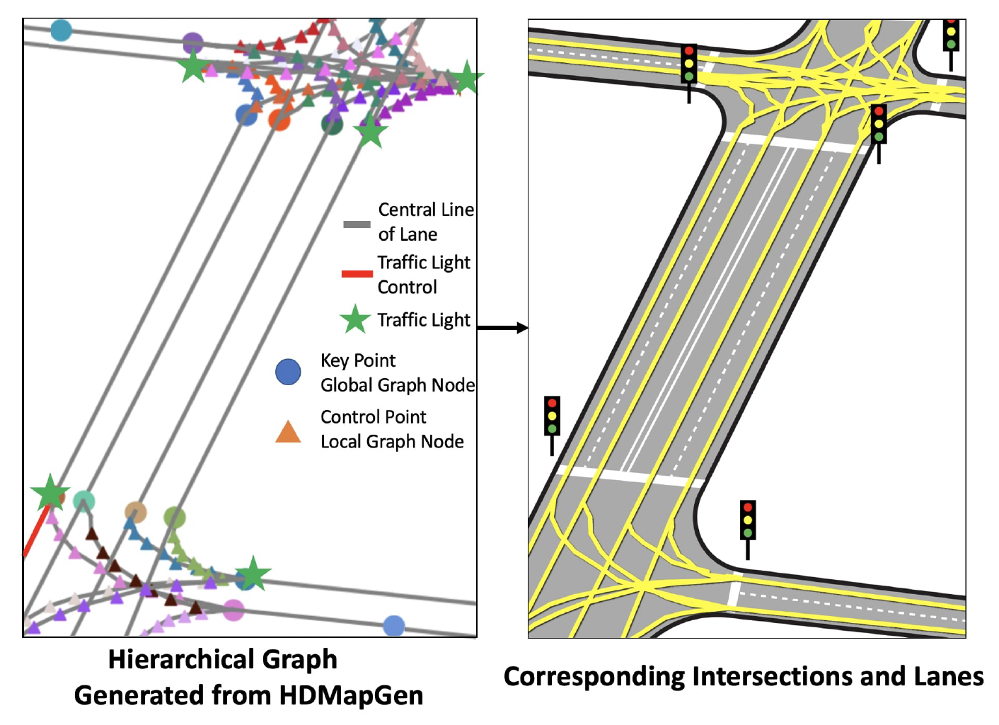
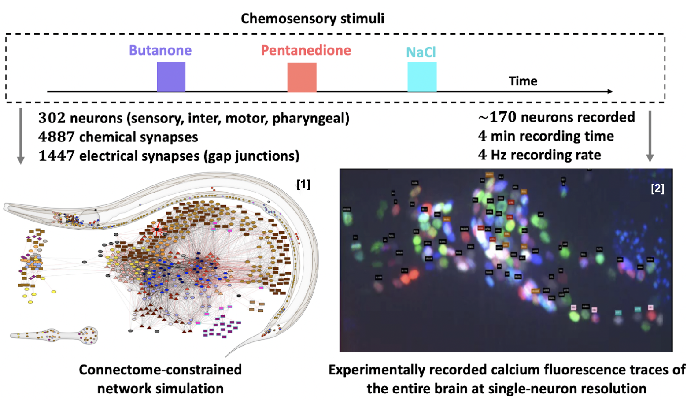
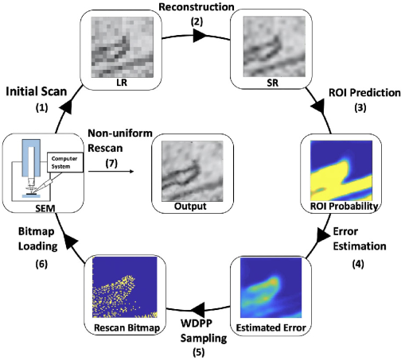
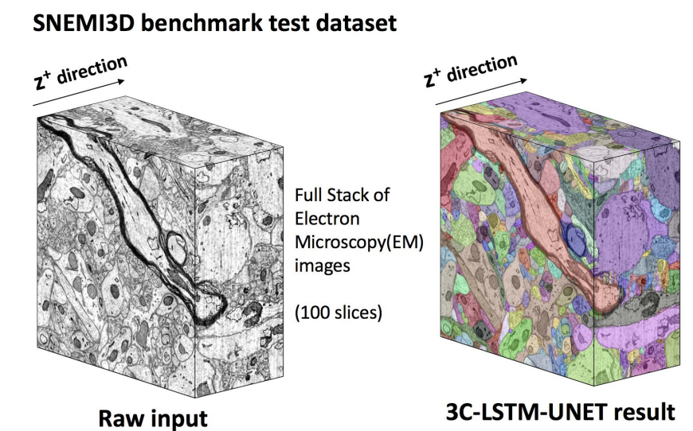
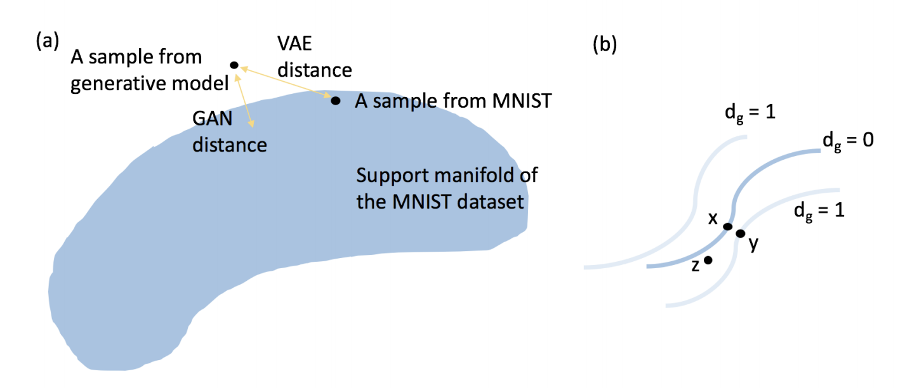

|
Research
My research interest is NeuroAI, which studies the intersection of natural intelligence and artificial intelligence. During my PhD, I developed advanced deep learning tools for fast and scalable automatic connectomics pipelines to discover the brain, and linking the anatomical structure and neural activity with whole-brain modeling.
In the current collaboration with investigators at the Allen Institute and the University of Washington, I am developing interpretable deep learning approaches including probabilistic modeling and representation learning for biological and artificial systems. My research topics broadly include
(1) Developing fast and scalable automatic pipelines to discover the brain;
(2) Modeling brain with multi-modal neural data;
(3) Understanding the robustness and efficiency of coding, computation and learning in biological and artificial systems;
(4) Building brain-inspired AI frameworks.
I'm looking for motivated Ph.D. collaborators who are passionate about NeuroAI. Drop me an email if you are interested!
|
|
News
|
| * indicates equal contribution |
Representative papers are highlighted.
|

|
X-Ray2EM: Uncertainty-Aware Cross-Modality Image Reconstruction from X-Ray to Electron Microscopy in Connectomics
Yicong Li, Yaron Meirovitch, Aaron T. Kuan, Jasper S. Phelps, Alexandra Pacureanu, Wei-Chung Allen Lee, Nir Shavit, Lu Mi
IEEE - ISBI 2023
We propose an uncertainty-aware 3D reconstruction model that translates X-Ray images to EM-like images with enhanced membrane segmentation quality.
arxiv
|
|

|
The XPRESS challenge: Xray Projectomic Reconstruction - Extracting Segmentation with Skeletons
Tri Nguyen, Mukul Narwani, Mark Larson, Yicong Li, Shuhan Xie, Hanspeter Pfister, Donglai Wei, Nir Shavit, Lu Mi, Alexandra Pacureanu, Wei-Chung Lee, Aaron T. Kuan
IEEE - ISBI Challenge 2023
We organize an instance segmentation challenge with volumetric XNH images of cortical white matter axons from the mouse brain at 100 nm per voxel isotropic resolution. Both skeleton and voxel ground truth annotations are provided for axon trajectories.
link
/ arxiv
/ code
/ tutorial
|
|

|
im2nerf: Image to Neural Radiance Field in the Wild
Lu Mi, Abhijit Kundu, David Ross, Frank Dellaert, Noah Snavely, Alireza Fathi
We propose im2nerf, a learning framework with deep generative model that predicts a continuous neural object representation given a single input image in the wild, supervised by only segmentation output from off-the-shelf recognition methods.
arxiv
|
|

|
Connectome-constrained Latent Variable Model of Whole-Brain Neural Activity
Lu Mi, Richard Xu, Sridhama Prakhya, Albert Lin, Nir Shavit, Aravinthan D.T. Samuel, Srinivas C. Turaga
ICLR 2022
We use stochastic threshold linear dynamics to model the whole-brain neural network, using connectome constraint on the neural activity.
pdf
/ code
|
|

|
Training-Free Uncertainty Estimation for Dense Regression: Sensitivity as a Surrogate
Lu Mi, Hao Wang, Yonglong Tian, Hao He, Nir Shavit
AAAI 2022
ICML 2021 Workshop on Uncertainty & Robustness in Deep Learning
We perform a systematic exploration into training-free uncertainty estimation for dense regression, an unrecognized yet important problem, and provide a theoretical construction justifying such estimations.
arxiv
/ video
/ slides
/ poster
|
|

|
HDMapGen: A Hierarchical Graph Generative Model of High Definition Maps
Lu Mi, Hang Zhao, Charlie Nash, Xiaohan Jin, Jiyang Gao, Chen Sun, Cordelia Schmid, Nir Shavit, Yuning Chai, Dragomir Anguelov
CVPR 2021
We propose HDMapGen, a hierarchical graph generative model capable of producing high-quality and diverse HD maps.
pdf
/ video
/ slides
/ poster
|
|

|
Connectome-constrained Latent Variable Model of C. elegans Chemosensation
Lu Mi, Richard Xu, Sridhama Prakhya, Albert Lin, Aravinthan D.T. Samuel, Srinivas C. Turaga
Cosyne 2021
We use stochastic threshold linear dynamics to model the C. elegans neural network, using connectome constraint on the neural activity.
pdf
/ slides
/ poster
|
|

|
Learning Guided Electron Microscopy with Active Acquisition
Lu Mi, Hao Wang, Yaron Meirovitch, Richard Schalek, Srinivas C. Turaga, Jeff W. Lichtman, Aravinthan D. T. Samuel, Nir Shavit
MICCAI 2020
We show how to use deep learning to accelerate and optimize single-beam SEM acquisition of images.
arxiv
/ code
|
|

|
Cross-Classification Clustering: An Efficient Multi-Object Tracking Technique for 3-D Instance Segmentation in Connectomics
Yaron Meirovitch*, Lu Mi*, Hayk Saribekyan, Alexander Matveev, David Rolnick, Nir Shavit
CVPR 2019
We introduce cross-classification clustering (3C), a technique that simultaneously tracks complex, interrelated objects in an image stack.
pdf
|
|

|
A Probe Towards Understanding GAN and VAE Models
Lu Mi*, Macheng Shen*, Jingzhao Zhang*
We summarize our experiment results that compare these two categories of models GAN and VAE in terms of fidelity and mode collapse.
arxiv
|
Professional Services
- Reviewer for CVPR, ECCV, ICCV, AAAI.
- Guest lecture on Biophysics VAEs, Deep Learning for Neuroscience, CSE 599N, University of Washington, Seattle, 2023.
- Talk on How to Link Multi-Modal Neural Data with Deep Learning, NeuroAI in Seattle, 2022.
- Talk on Deep Learning Tools for Next-Generation Connectomics, Allen Institute, 2022.
- Talk on Connectome-Constrained Modeling, Computational Neuroscience Seminar, Flatrion Institute, 2022.
- Talk on Connectome-Constrained Modeling, CVML meeting, HHMI Janelia Research Campus, 2021.
- Talk on Cross-Classification Clustering Segmentation, Machine Learning & Biology NSF Workshop, 2019.
- TA for MIT 6.555 (Biomedical Signal and Image Processing) by Julie Greenberg, 2019.
|
Research Experience
- 2022.9 - present, Shanahan Foundation Fellow & Postdoctoral Researcher, Allen Institute & University of Washington
- 2017.8 - 2022.8, Research Assistant, MIT Computer Science and Artificial Intelligence Laboratory
Advisor: Prof. Nir Shavit
- 2020.3 - 2022.8, Fellow, Harvard Center for Brain Science
Advisors: Prof. Aravinthan D.T. Samuel, Prof. Jeff W. Lichtman
- 2021.6 - 2021.12, Research Intern, Google Research Team
Advisors: Dr. Alireza Fathi, Prof. Noah Snavely, Dr. Abhijit Kundu, Prof. Frank Dellaert
- 2020.3 - 2021.11, Visiting Student, HHMI Janelia Research Campus
Advisor: Dr. Srinivas C. Turaga
- 2020.6 - 2020.8, Research Intern, Waymo Research Team
Advisors: Prof. Hang Zhao, Dr. Charlie Nash, Dr. Jiyang Gao, Prof. Chen Sun
|
Education
- 2017.8 - 2022.8, Massachusetts Institute of Technology
Doctor of Philosophy in Computer Science
Minor in Computational Neuroscience
- 2017.9 - 2019.6, Massachusetts Institute of Technology
Master of Science in Electrical Engineering and Computer Science
- 2013.9 - 2017.6, Tsinghua University
Bachelor of Science in Measurement, Control and Instruments
|
Honors and Awards
- Shanahan Foundation Fellowship, Allen Institute & University of Washington, Seattle, 2022
- Risng Stars in EECS, UT Austin, 2022
- MathWorks Fellowship, MIT EECS, 2021
- NIH Awards, MICCAI, 2020
- Grass Instruments Co. Fellowship, MIT EECS, 2017
- Tang Lixing Fellowship, Tsinghua (30 in 3000), 2017
- Best Paper Awards, Optofluidics, 2016
- 1st Prize (Meritorious Winner) COMAP's Mathematical Contest in Modeling (MCM), 2016
|
|
{kind=link}